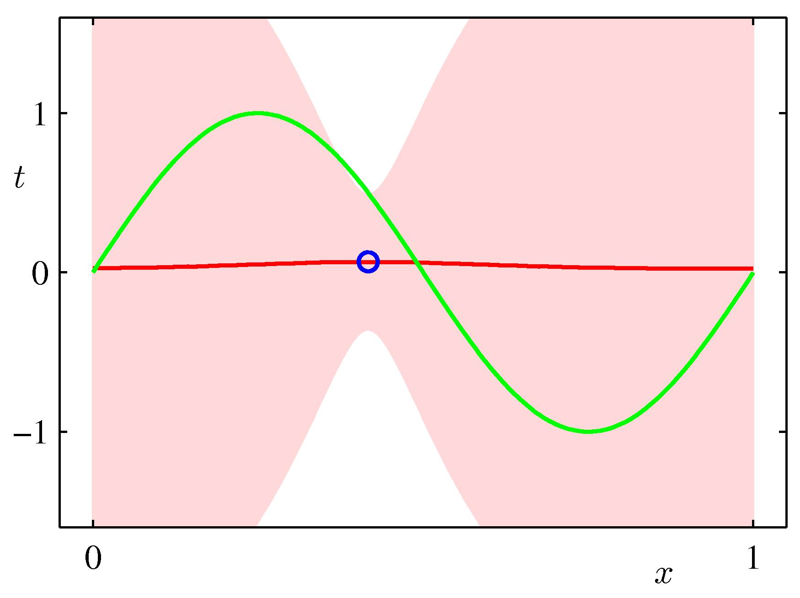

Inference in Graphical Models
Bayesian Linear Regression
The PGM representation should not feel foreign - lets consider the simplest possible example of a graphical model and see how it connects to concepts we have seen before. Any joint distribution $p(\bm x, y)$ can be decomposed using the product rule (we drop the data qualifier)
$$p(\bm x, y) = p(\bm x) p(y|\bm x)$$
and such distribution can be represented via the simple PGM graph (a) below.
Simplest possible PGM example
We introduce now a graphical notation where we shade, nodes that we consider observed. Let us know assume that we observe $y$ as shown in (b). We can view the marginal $p(\bm x)$ as a prior over $x$ and and we can infer the posterior distribution using the Bayes rule
$$p(x|y) = \frac{p(y|x)p(x)}{p(y)}$$
where using the sum rule we know $p(y) = \sum_{x’} p(y|x’) p(x’)$. This is a very innocent but very powerful concept.
To see why lets consider an online learning problem where the underlying target function is $p_{data}(x, \mathbf a) = a_0 + a_1 x + n$ - this is the equation of the line. In this example its parametrized with $a_0=-0.3, a_1=0.5$ and $n \in \mathcal N(0, \sigma=0.2)$. To match the simple inference exercise that we just saw, we draw the equivalent PGM
Bayesian Linear Regression example - please replace $t$ with $y$ to match earlier notation in these notes
The Bayesian update of the posterior can be intuitively understood using a graphical example of our model of the form: $$g(x,\mathbf{w})= w_0 + w_1 x$$ (our hypothesis). The reason why we pick this example is illustrative as the model has just two parameters and is amendable to visualization. The update needs a prior distribution over $\mathbf w$ and a likelihood function. As prior we assume a spherical Gaussian
$$p(\mathbf w | \alpha) = \mathcal N(\mathbf w | \mathbf 0, \alpha^{-1} \mathbf I)$$
with $\alpha = 0.2$. We starts in row 1 with this prior and at this point there are no data and the likelihood is undefined while every possible linear (line) hypothesis is feasible as represented by the red lines. In row 2, a data point arrives and the the Bayesian update takes place: the previous row posterior becomes the prior and is multiplied by the current likelihood function. The likelihood function and the form of the math behind the update are as shown in Bishop’s book in section 3.3. Here we focus on a pictorial view of what is the update is all about and how the estimate of the posterior distribution $p(\mathbf w | \mathbf y)$ ultimately (as the iterations increase) it will be ideally centered to the ground truth ($\bm a$).
 Instructive example of Bayesian learning as data points are streamed into the learner. Notice the dramatic improvement in the posterior the moment the 2nd data point arrives. Why is that?
Instructive example of Bayesian learning as data points are streamed into the learner. Notice the dramatic improvement in the posterior the moment the 2nd data point arrives. Why is that?
Bayesian vs Maximum Likelihood
In the linear regression section we have seen a simple supervised learning problem that is specified via a joint distribution $\hat{p}_{data}(\bm x, y)$ and are asked to fit the model parameterized by the weights $\mathbf w$ using ML. Its important to view pictorially perhaps the most important effect of Bayesian update:
- In ML the $\mathbf{w}$ is treated as a known quantity with an estimate $\hat{\mathbf{w}}$ that has a mean and variance resulting from the distribution of $y$.
- In the Bayesian setting, we are integrating over the distribution of $\mathbf{w}$ given the data i.e. we are not making a point estimate of $\mathbf{w}$ but we marginalize out $\mathbf{w}$.
$$p(\mathbf{w}|y) = \frac{p(y|\mathbf{w}) p(\mathbf{w})}{\int p(y|\mathbf{w}) p(\mathbf{w}) d\mathbf{w}}$$
- We get at the end a posterior (predictive) distribution rather than a point estimate. As such it can capture the effects of sparse data producing more uncertainty via its covariance in areas where there are no data as shown in the following example which is exactly the same sinusoidal dataset fit with Bayesian updates and Gaussian basis functions.


ML frameworks have been enhanced recently to deal with Bayesian approaches and approximations that make such approaches feasible for both classical and deep learning. TF.Probability and PyTorch Pyro are examples of such enhancements.